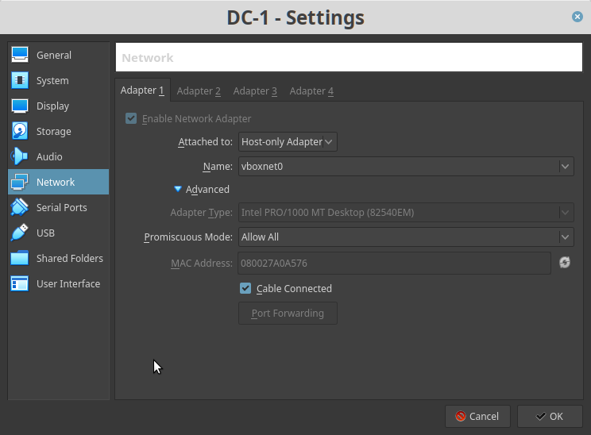
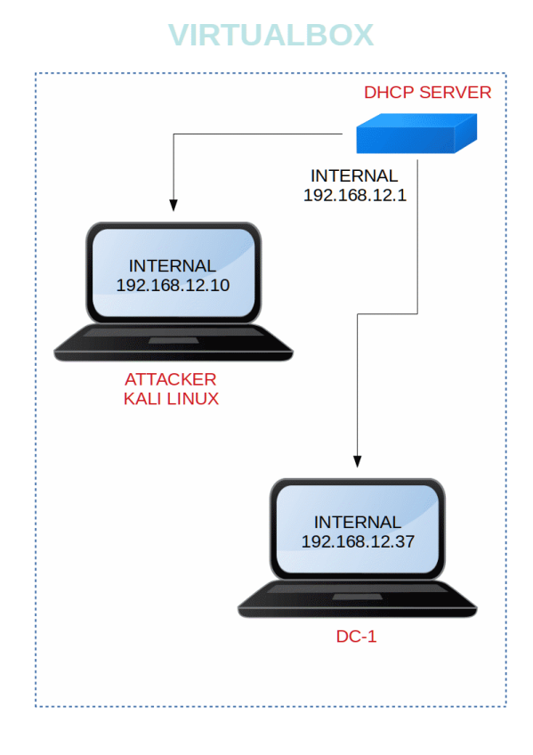

DC-1
▸ DC-1
▸ 1. Scan Network
▸ 2. Finding Services and Ports
▸ 3. Enumeration
▸ 3.1 Port 80
▸ 4. Exploiting
▸ 4.1 Search exploit
▸ 4.2 Log as Admin
▸ 5. Privilege Escalation
▸ 5.1 Reverse shell
▸ 5.2 Getting the flags
Difficulty: Beginner
Flag: 5 flags. There are five flags in total, but the ultimate goal is to find and read the flag in root's home directory. You don't even need to be root to do this, however, you will require root privileges.
Learning:
• Using nmap to find opened ports & running services.
• Detecting technologies used to build web apps.
• Checking robots.txt file.
• Searching & using public exploits.
• Uploading shell to drupal CMS.
• Creating reverse shell using ncat (nc).
• Privilege escalation using SUID binaries.
• Collect important information from PHP configuration files.
• Cracking Linux credentials.
Download (Mirror): http://www.five86.com/downloads/DC-1.zip
Install the machine on VirtualBox:
1. Download the file and extract it.
2. On Virtualbox choose File->Import Appliance.
3. Select the file “ova”.
4. Accept to import.


Watch your Machine IP.

Diagram
 Index
Index